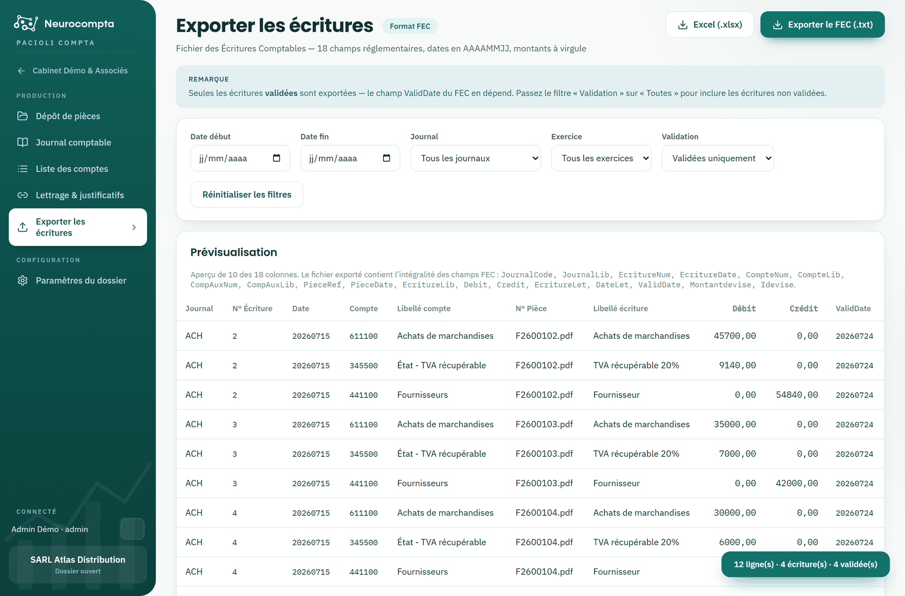

Exporter les écritures
Produire le fichier destiné à votre logiciel comptable.
L'export produit le fichier des écritures du dossier, dans le format attendu par votre logiciel de production.
Par défaut, seules les écritures validées sont exportées : c'est ce qu'attend un fichier des écritures comptables.

Choisir ce que vous exportez
- Filtrez par exercice, par période ou par journal.
- La prévisualisation affiche les écritures retenues et leur nombre de lignes avant tout téléchargement.
Deux formats
- FEC (.txt) : le fichier des écritures comptables, avec ses dix-huit champs réglementaires.
- Excel (.xlsx) : le même contenu en tableau, pour relecture ou retraitement.
Astuce — Si le nombre de lignes vous paraît faible, vérifiez l'état de validation dans le journal : les écritures non validées sont exclues par défaut.